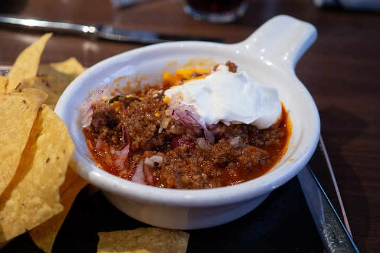

Chili

Description
A warm bowl of chili is the perfect dish for cozy nights or game day gatherings. This recipe blends hearty
beans, ground beef, and a mix of spices to create a flavorful and filling meal that everyone can enjoy.
The best part about chili is its versatility—you can adjust the spice level, swap in different types of beans,
or even make it vegetarian. Serve it with cornbread, rice, or your favorite toppings for a meal that's both
comforting and customizable.
Ingredients
- 1 pound ground beef (or turkey)
- 1 tablespoon olive oil
- 1 medium onion, diced
- 2 garlic cloves, minced
- 1 bell pepper, diced
- 1 can (15 oz) kidney beans, drained and rinsed
- 1 can (15 oz) black beans, drained and rinsed
- 1 can (28 oz) diced tomatoes
- 2 tablespoons tomato paste
- 2 tablespoons chili powder
- 1 teaspoon cumin
- 1/2 teaspoon paprika
- 1/2 teaspoon salt
- 1/4 teaspoon black pepper
- 1 cup beef or vegetable broth
Steps
- Heat olive oil in a large pot over medium heat. Add ground beef and cook until browned. Drain excess fat if needed.
- Stir in onion, garlic, and bell pepper. Cook until vegetables are softened.
- Add chili powder, cumin, paprika, salt, and black pepper. Stir to coat the meat and vegetables in spices.
- Mix in tomato paste, diced tomatoes, beans, and broth. Stir well.
- Bring to a boil, then reduce heat to low. Simmer uncovered for 25‐30 minutes, stirring occasionally.
- Taste and adjust seasoning as needed. Serve hot with toppings like shredded cheese, sour cream, or chopped green onions.
Home